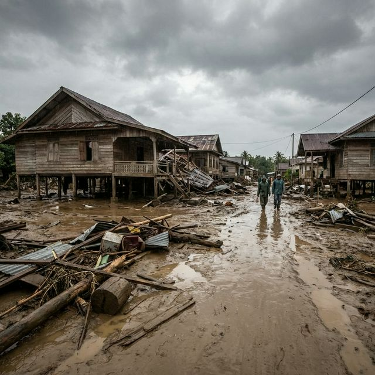

Inventarisasi Pemulihan Sektor
Evaluasi mendalam pada pilar-pilar utama pelayanan publik yang menjadi tulang punggung pemulihan Aceh Utara.
01. Pemerintahan
Pemulihan fungsionalitas 287 kantor pelayanan dari tingkat Kabupaten hingga Gampong.
02. Layanan Publik
Status kesiapan operasional fasilitas kesehatan, sekolah, dan pusat layanan sosial.
03. Akses & Transportasi
Rincian kerusakan 104 KM jalan provinsi dan kendala distribusi logistik via jembatan.
04. Sektor Ekonomi
Target rehabilitasi pasar-pasar strategis dan pemulihan mata pencaharian warga.
05. Fasilitas Sosial
Rekonstruksi rumah ibadah dan penanganan khusus untuk kelompok rentan.
06. Utilitas Dasar
Pemulihan ketersediaan air bersih (PDAM), listrik, internet, dan pasokan energi.
Temuan Verifikasi Faktual
Hasil rekonsiliasi tim lapangan terhadap objek-objek dengan kerusakan tingkat fatal.
Prioritas Aceh Utara Barat
Spotlight: SawangSpotlight: Aceh Utara Tengah/Timur
Pusat PemerintahanEksplorasi Status Wilayah
Navigasi cerdas untuk melihat status pemulihan di setiap kecamatan terdampak.
Rekaman Kondisi Lapangan

Hancurnya Pusat Perekonomian
Banjir lumpur dengan debit tinggi mengakibatkan pasar dan kantor pemerintahan di wilayah hilir hilang sepenuhnya dari lokasi semula.

Isolasi Geografis Mendesak
Rusaknya infrastruktur darat menghalangi distribusi bahan bangunan dan alat berat ke wilayah pedalaman terdampak.
Rekomendasi & Langkah Strategis
Normalisasi DAS Hilir (Critical Path)
Melakukan normalisasi sungai hilir sesegera mungkin untuk meminimalisir risiko banjir susulan yang dapat menghancurkan aset rehabilitasi yang sedang dibangun.
Relokasi Pusat Layanan Terintegrasi
Merencanakan relokasi gedung pemerintahan dan pasar dari bantaran sungai yang telah hanyut ke area yang lebih aman (High Ground Mitigation).